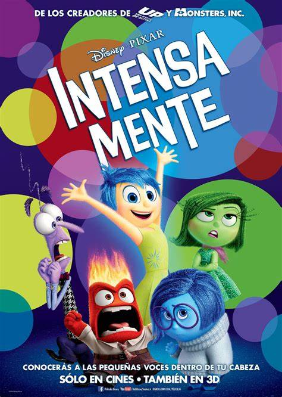
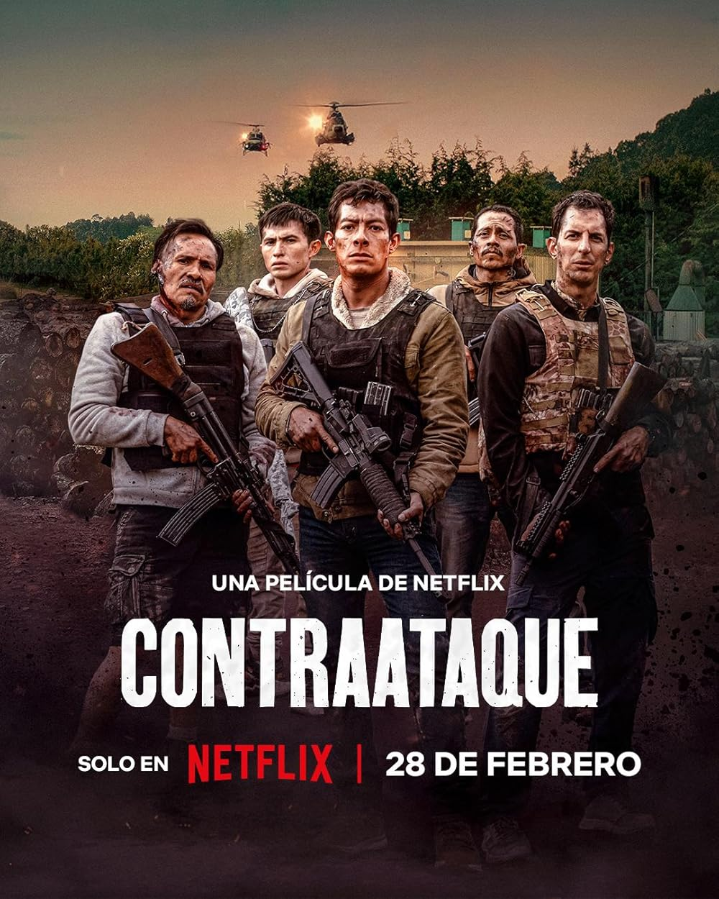

En esta sección, exploraremos una selección de películas que han dejado una huella significativa en el cine
contemporáneo. Desde dramas conmovedores hasta historias de amor, cada filme ofrece una perspectiva única
sobre la vida y las relaciones humanas.
Explora nuestras reseñas de películas que no solo entretienen, sino que también invitan a la reflexión.
A través de estas historias, esperamos inspirar y conectar con el público.
A DOS METROS DE TI
Director:
Juan Baldoni
Género:
Romance, drama
Año de estreno:
Esta película se estreno en el año 2019
Portada de la película "A dos metros de ti"
Sinopsis:
"A dos metros de ti" cuenta la historia de Stella Grant y Will Newman, dos adolescentes que viven en un hospital debido a
la fibrosis quística. A pesar de las reglas que les impiden acercarse físicamente, desarrollan una conexión profunda.
Temas principales que abarca la película:
El amor en circunstancias difíciles: "La película nos muestra que, incluso en medio de la adversidad, el amor puede surgir
con fuerza, transformándose en un refugio y una fuente de valentía para seguir adelante.
La lucha contra la enfermedad: La película retrata con sensibilidad lo que significa vivir con una enfermedad crónica,
mostrando no solo los desafíos físicos, sino también el torbellino de emociones como el miedo, la esperanza y la fuerza interior que
nace cuando menos se espera.
La importancia de la conexión humana: A través del vínculo entre Stella y Will, la película resalta cuán vitales son la conexión
humana y el apoyo emocional cuando la vida se vuelve más difícil. Nos recuerda que, incluso en medio de la enfermedad, el afecto y la
comprensión pueden dar sentido y alivio.
Opinión:
"A dos metros de ti" toca el corazón con una mezcla delicada de romance y drama. Cole Sprouse y Haley Lu Richardson
interpretan a sus personajes con una honestidad que hace que sintamos cada alegría y cada miedo junto a ellos. Más que un simple romance,
la película nos recuerda lo frágil que puede ser la vida y lo valioso que es saborear cada instante con las personas que amamos.
Recomendación:
Recomiendo "A dos metros de ti" a quienes buscan historias que conecten con las emociones más profundas. Esta película no solo trata sobre
el amor, sino sobre la fuerza de espíritu, la vulnerabilidad y el valor de los pequeños gestos cuando todo parece difícil. Es ideal para quienes
quieren dejarse tocar por una historia humana, sincera y esperanzadora.
Tráiler:
Una historia de amor que desafía la distancia y toca el corazón. Mira el tráiler de A dos metros de ti y déjate llevar por las emociones.
Para ver más información de esta linda película, ingresa al siguiente enlace A dos metros de ti
RESEÑA: INTENSA-MENTE (INSIDE OUT)
Director:
Pete Docter
Género:
Animación, Aventura, Comedia
Año de estreno:
Esta película se estreno en el año 2015

Portada de la película "Intensa-mente"
Sinopsis:
"Intensa-mente" sigue la vida de Riley, una niña de 11 años que se enfrenta a un cambio significativo cuando su familia se muda a una nueva ciudad.
En su mente, cinco emociones —Alegría, Tristeza, Miedo, Ira y Desagrado— trabajan juntas para guiarla en esta nueva etapa. A medida que las emociones
intentan ayudar a Riley a adaptarse, surgen desafíos que las llevan a un viaje inesperado a través de su mente.
Temas principales que abarca la película:
La complejidad de las emociones humanas: La película nos invita a reflexionar sobre cómo cada emoción ya sea alegría, tristeza,
desagrado, enojo o miedo cumple un rol importante en nuestra vida. Nos muestra que todas forman parte de quienes somos y que aprender a convivir
con ellas nos ayuda a entendernos mejor.
La importancia de la tristeza en el proceso de crecimiento: Más que una emoción negativa, la tristeza nos acompaña en los momentos en que más
necesitamos reconectarnos con nosotros mismos. Es esa pausa que nos invita a mirar hacia adentro, a reconocer lo que duele y lo que necesitamos sanar.
Gracias a ella, aprendemos a soltar lo que pesa, a abrirnos a los demás y a crecer con más profundidad y compasión.
La adaptación a los cambios y la búsqueda de identidad: A través del viaje de Riley, vemos cómo los cambios en la vida pueden desafiarnos profundamente.
Pero también nos enseña que, en medio de la incertidumbre, podemos redescubrir quiénes somos y construir una nueva versión de nosotros mismos.
Opinión:
"Intensa-mente" es mucho más que una película animada, es un viaje profundo y conmovedor hacia el corazón de nuestras emociones. Con una animación colorida
y entrañable, nos invita a entender que sentir tristeza, alegría, miedo o enojo es parte de ser humanos. Cada emoción tiene su lugar, su voz y su razón de ser.
A través de una historia sencilla pero poderosa, la película nos recuerda que no hay emociones “buenas” o “malas”, solo sentimientos que necesitan ser escuchados.
Recomendación:
Ideal para personas de todas las edades, "Intensa-mente" no solo nos hace reír o llorar: también nos enseña a conocernos mejor y a aceptar lo que sentimos
sin miedo ni juicio. Una película que deja huella en el corazón y abre la puerta a conversaciones necesarias sobre la salud emocional.
Tráiler:
Prepárate para un viaje al corazón de tus emociones. Mira el tráiler de Intensamente y descubre cómo cada sentimiento tiene algo que enseñarnos.
¿Quieres saber más acerca de está emocionante película?, ingresa al siguiente enlace Intensa-mente
RESEÑA: CONTRAATAQUE
Director:
Chava Cartas
Género:
Acción, Suspenso, Drama
Año de estreno:
Esta película se estreno en el año 2025

Portada de la película "Contraataque"
Sinopsis:
"Contraataque" es un emocionante thriller de acción dirigido por Chava Cartas y escrito por José Rubén Escalante Méndez.
La trama sigue a un grupo de amigos que, durante un día aparentemente normal de compras en la frontera entre México y Estados Unidos, se ven
atrapados en una violenta confrontación con sicarios. Sin embargo, pronto descubren que los verdaderos objetivos no son ellos, sino un un grupo
de élite del ejército mexicano conocido como Murciélagos, dirigido por el capitán Guerrero. A medida que intentan sobrevivir, la historia se centra
en este grupo de valientes soldados, quienes después de realizar un exitoso rescate de dos rehenes en Tamaulipas, se convierten en el blanco de una
brutal emboscada a manos de un despiadado cártel del crimen organizado, que no descansará hasta verlos muertos. Protagonizada por Luis Alberti,
Noé Hernández, Mayra Batalla, Leonardo Alonso, Pedro Joaquín, Guillermo Nava y David Calderón León, esta cinta de acción promete mantenerte al borde
del asiento.
Temas principales que abarca la película:
La lucha por la justicia: Más que una simple batalla contra los villanos, la película muestra cómo los personajes se enfrentan a decisiones
difíciles y riesgos reales para defender lo que consideran justo. Es un recordatorio de que la justicia muchas veces exige valentía y sacrificio.
El poder de la amistad: En medio del caos y el peligro, la amistad se convierte en un refugio. La película resalta cómo el apoyo genuino entre
amigos puede ser una fuerza poderosa, capaz de sostenernos incluso en los momentos más oscuros.
Superación personal: Cada personaje emprende su propio viaje interior. Enfrentando miedos, heridas del pasado y limitaciones, demuestran que el
crecimiento personal es posible cuando hay voluntad, propósito y, sobre todo, corazón.
Opinión:
"Contraataque" no solo es adrenalina: también es un retrato del valor y el sacrificio de quienes enfrentan la violencia con dignidad. Te mantendrá
al filo del asiento y con el corazón acelerado. Es una película ue también logra tocar fibras emocionales a través del drama que viven sus personajes.
Las actuaciones se sienten auténticas, haciendo que conectes con las decisiones, los miedos y la valentía de cada uno. La dirección acierta al construir
una atmósfera tensa y realista, mientras que la cinematografía envuelve al espectador en cada escena, desde los tiroteos más crudos hasta los momentos de
mayor humanidad. Es una historia que atrapa, conmueve y deja huella.
Recomendación:
Ideal para personas de todas las edades, "Contraataque" no solo nos hace reír o llorar: también nos enseña a conocernos mejor y a aceptar lo que
sentimos sin miedo ni juicio. Una película que deja huella en el corazón y abre la puerta a conversaciones necesarias sobre la salud emocional.
Tráiler:
No te pierdas un adelanto de esta intensa historia de valentía, acción y lealtad. Dale play al tráiler y sumérgete en el corazón de “Contraataque”.
¿Quieres saber más acerca de sobre está película?, ingresa al siguiente enlace Contraataque